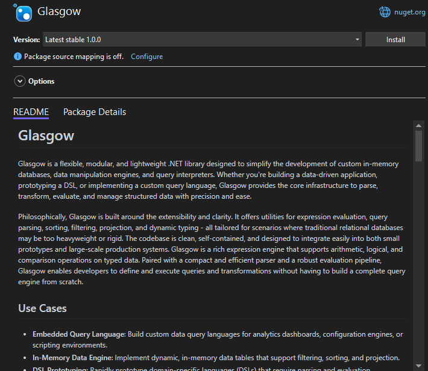

Installation
Glasgow can be easily installed into your .NET project using NuGet Package Manager.
Installation via NuGet Package Manager
The simplest way to add Glasgow to your project is through NuGet.

Using the .NET CLI
Open your terminal or command prompt, navigate to your project's directory, and run the following command:
dotnet add package Glasgow --version 1.0.0
Using Visual Studio
- Open your project in Visual Studio.
- Right-click on your project in the Solution Explorer and select "Manage NuGet Packages...".
- In the "Browse" tab, search for
Glasgow. - Select the
Glasgowpackage and click "Install". - Confirm the installation when prompted.
Using PowerShell (Package Manager Console in Visual Studio)
If you're in Visual Studio, you can also use the Package Manager Console:
Go to
Tools>NuGet Package Manager>Package Manager Console.In the console, run the following command:
Install-Package Glasgow -Version 1.0.0After installation, you can verify that the package is correctly referenced in your project file (e.g.,
.csproj). Look for an<PackageReference>entry similar to this:
<Project Sdk="Microsoft.NET.Sdk">
<PropertyGroup>
<OutputType>Exe</OutputType>
<TargetFramework>net8.0</TargetFramework>
<ImplicitUsings>enable</ImplicitUsings>
<Nullable>enable</Nullable>
</PropertyGroup>
<ItemGroup>
<PackageReference Include="Glasgow" Version="1.0.0" />
</ItemGroup>
</Project>